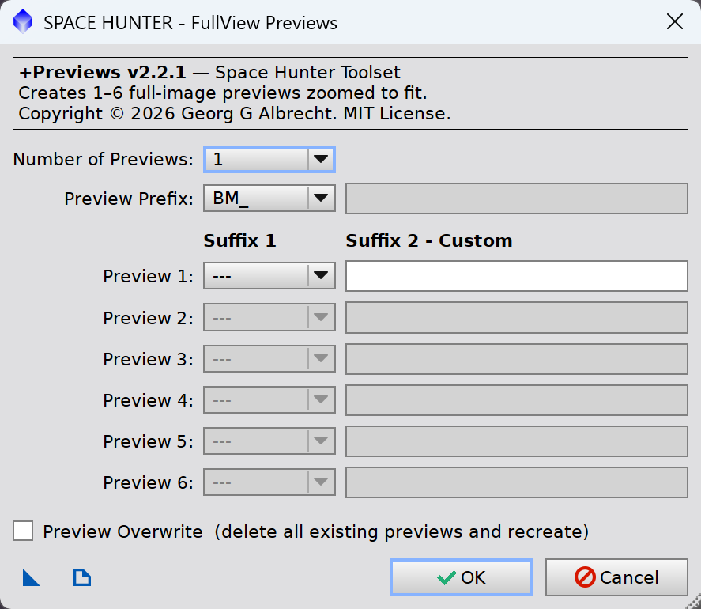

Creates 1 to 6 full-size previews of the active image, named for MGC background models, GradientCorrection or your own use, and zooms each to fit. [more]
Keywords: Space Hunter, previews, full-size previews, preview names, background model, MGC, GradientCorrection
[hide]
[hide]
+Previews is a small helper of the Space Hunter Lazy Workflow (Part 1, Part 2). It adds full-size previews to the active image in one step, with names that the Lazy Workflow and the gradient tools understand.
Use it after Part 1 to add more background models or GradientCorrection runs, or on its own whenever a full-size preview is useful: to compare settings of any process before applying it to the whole image.
[hide]

Number of Previews
How many previews to create, 1 to 6. Only that many rows below are active.
Preview Prefix
How the previews are named: BM_, GC_, Preview or Custom TXT (see Preview Names). With Custom TXT, type your prefix in the box to the right.
Suffix 1
BM_ only: the MGC gradient scale for this preview (128 to 8192). Required for every active row.
Suffix 2 — Custom
BM_ and Custom TXT: optional text added to the name, e.g. A gives BM_128_A.
Preview Overwrite
Off (default): existing previews are kept, and a name that already exists is skipped. On: all existing previews of the image are deleted first.
The buttons at the bottom left:
New Instance
Drag the triangle onto the workspace to save the current settings as a process icon. Double-click the icon, or drop it on an image, to open the dialog with these settings again.
Documentation
Opens this manual.
Names may only contain letters, digits and _, with no spaces. A custom prefix must start with a letter. The dialog tells you if a name can't be used.
The new previews cover the whole image. Each one is zoomed to fit, and the first new preview is shown at the end. The console lists every preview created or skipped.
Copyright © 2026 Georg G. Albrecht. MIT License.